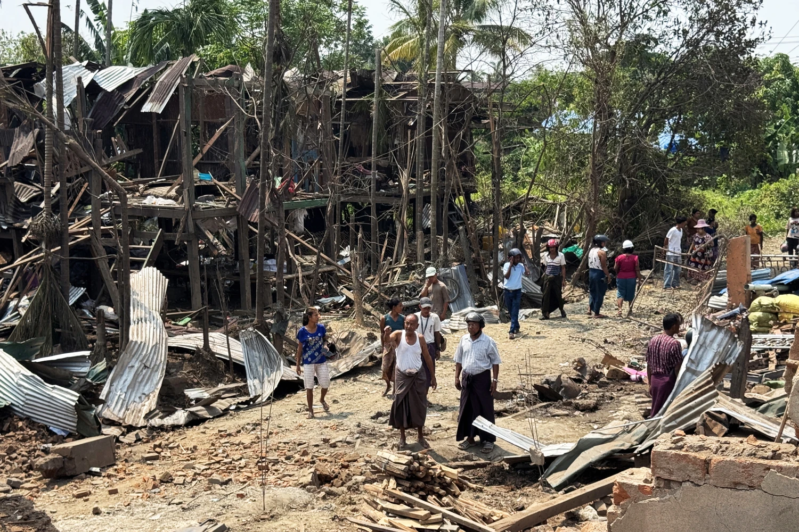
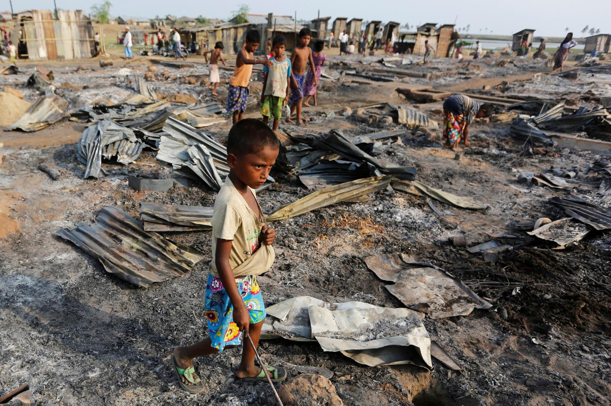
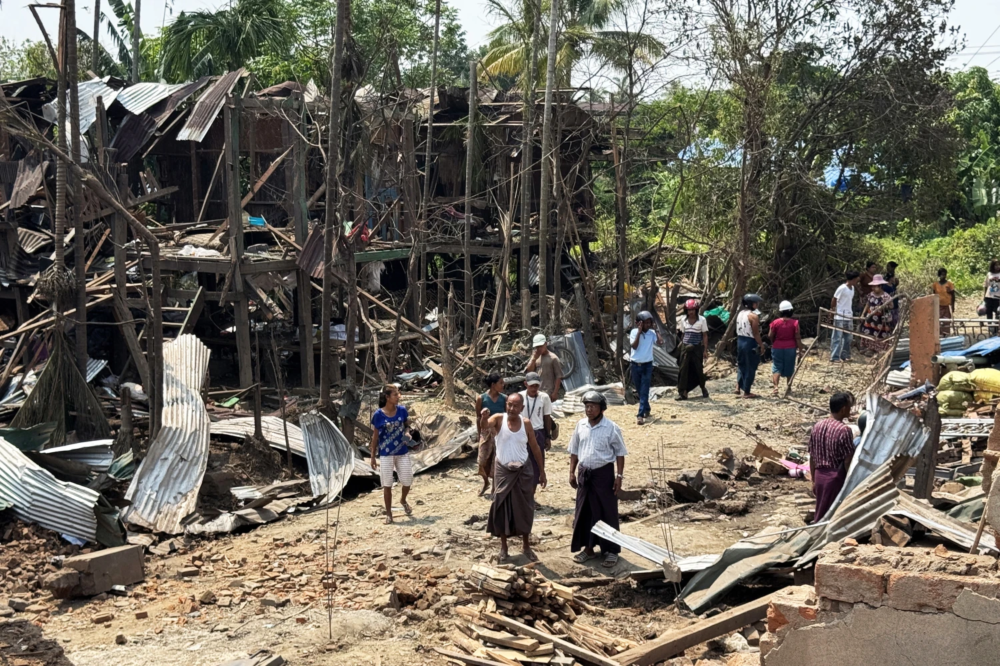
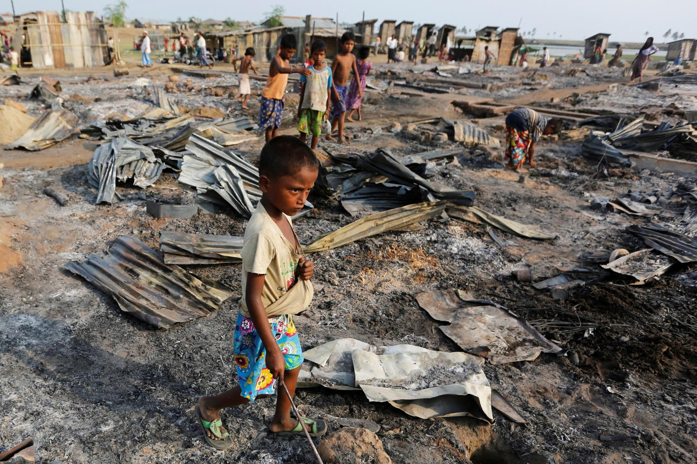

Resource & Political Exploitation
Myanmar is rich in jade, rubies, timber, and gas. Yet wealth from these resources rarely benefits local communities. Military control over mines and infrastructure has fueled corruption, funding armed operations and sustaining cycles of oppression.
Ethnic minorities are often forcibly displaced from resource-rich areas to enable extraction, leaving them vulnerable to hunger, disease, and violence. International trade indirectly sustains these operations, making global consumers part of the problem.
Ongoing Violence
Armed clashes between the military and ethnic armed organizations continue across northern and western regions. Civilians face indiscriminate shelling, landmines, and targeted attacks. Families are forced to flee with minimal belongings, often trekking days to reach temporary shelters.
Reports of extrajudicial killings, sexual violence, and the burning of villages are widespread, leaving communities traumatized and uncertain of survival.
 



Humanitarian Impact
Over 1 million people remain internally displaced, living in overcrowded camps or hiding in forests to escape conflict. Food insecurity, lack of clean water, and limited medical access create life-threatening conditions.
Children face interrupted education, malnutrition, and psychological trauma. Women are disproportionately affected by violence and displacement. The humanitarian response is insufficient due to insecurity and restricted access for aid organizations.
Survivor's Voices
**Hlaing**, a displaced farmer from Sagaing: “We left everything behind. The soldiers came at dawn. My neighbors are gone. My children cry every night. We have nowhere to sleep.”
**Aye Thandar**, a young mother: “The village was burned. We walked for days to reach a temporary shelter. I worry every moment about food and water for my children.”
**Ko Tun**, an elderly man from Kachin state: “We survive day by day. The world must know what is happening to us. Silence is killing us.” These voices reflect the daily struggle of millions trapped between violence and neglect.
Ways to Help
You can make a difference for the people of Myanmar. Supporting trusted humanitarian organizations provides food, water, medical aid, shelter, and protection to displaced civilians.
- Donate to verified organizations working in conflict zones
- Spread awareness about Myanmar’s humanitarian crisis
- Advocate for international action and protection for civilians
Every action matters. Visit our Action Page to help save lives in Myanmar today.